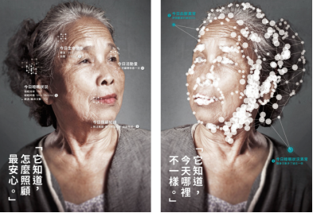
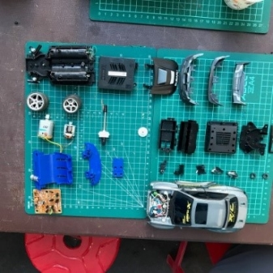

★主題活動—11/6遠距醫療論壇
地點：國立臺灣科學教育館7F西側特展區 講座／工作坊區
▲703專題演講11/6 11:00-12:00
【奇翼醫電—新科技於遠距醫療照護之應用】
講者：李維中／奇翼醫電董事長
講座內容：
疫情下遠距醫療照護更顯重要，通過使用簡單的設備和APP，測量心臟、呼吸，透過身體各種生理指數頻率和趨勢及和精神狀況的指標，結合醫療專業人員透過儀表板上的信息，也將可以做出最適合解決實際問題的最佳決策。
＊本場次無須事先報名，請於開場前10分鐘直接入座即可。
▲專題演講
11/6 13:30-14:30
【皮智—AI與遠距醫療】
講者：周肇興／皮智股份有限公司執行長
講座內容：
周醫師將透過簡報演說介紹人工智慧與遠距醫療如何應用在日常生活中，及如何在疫情嚴重時期幫助民眾，並搭配QA與有獎徵答，邀請民眾現場體驗皮膚檢測。
＊本場次無須事先報名，請於開場前10分鐘直接入座即可。

▲專題演講
11/6 14:30-15:30
【智齡科技—高齡社會來臨，用AI讓照護更精準！】
講者：張芸瑄/ 智齡科技行銷企劃
講座內容：
2025臺灣正式進入超高齡社會，龐大的照護需求伴隨而來。在照護人力短缺、科技興起的世代，運用科技讓照護更精準、有效率，卻又不失人與人之間的溫暖互動，是最佳的解方！
＊本場次無須事先報名，請於開場前10分鐘直接入座即可。

▲專題演講
11/6 15:30-16:30
【晉弘科技—e探睛彩、用AI看視界】
講者：李育宗 / 晉弘科技產品研發中心副總
講座內容：
伴隨全球醫療資源分配不均、慢性病普及、人口高齡化的趨勢，晉弘科技創新提供手持式數位五官鏡遠距醫療解決方案，並積極開發人工智慧、數位醫療市場。照護人們的健康，達到提早預防疾病、早期發現、早期治療的效果。
＊本場次無須事先報名，請於開場前10分鐘直接入座即可。
★主題活動—11/7創新教育系列活動
地點：國立臺灣科學教育館7F西側特展區 講座／工作坊區
▲專題演講
11/7 10:00-11:00
【桌遊設計講座：《築巢大戰》白蟻桌遊設計裡的生物學知識】
講者：關貫之／《築巢大戰》桌遊設計師
講座內容：
本講座將充分介紹與解析「蟻客世界」所研發的桌遊—《築巢大戰》的設計細節，讓觀眾認識科普桌遊的特色與魅力：在玩遊戲互相熟悉增溫的同時亦能獲取新知，認識各種白蟻的特性！
＊本場次無須事先報名，請於開場前10分鐘直接入座即可。
▲專題演講
11/7 11:00-12:00
【家樂福食物轉型計畫：由科學的視野看動物服務】
講者：蘇小真／家樂福基金會執行長
講座內容：
家樂福2018推出食物轉型計畫，嚴選食材從牧場到餐桌為您把關，只因每個人都值得最好!動物福利是家樂福近年來致力追求的改革推動，從非籠飼雞蛋到現在的透明鮮乳，有快樂生長的環境就能孕育出更健康好的商品。
＊本場次無須事先報名，請於開場前10分鐘直接入座即可。
▲專題演講
11/7 13:30-14:30
【NFT的未來想像】
講者：林經堯／國立臺南藝術大學文化資產研創中心
講座內容：
今年最火紅的數位經濟，NFT 的特性與應用、藝術應用的範例
＊本場次無須事先報名，請於開場前10分鐘直接入座即可。
▲玩具拆拆樂工作坊
11/7 14:30-16:30
【伴伴學 X 玩具銀行：陪你拆玩具探索科技】
講者：鄭鴻旗／伴伴學社群志工
工作坊內容：
有想過壞掉的玩具該怎麼辦？你知道任意丟棄的故障玩具會造成環境的污染嗎？這次的工作坊與玩具銀行合作取得大量壞掉的玩具作為創作材料，並且現場有非常愛玩愛動手做的 Maker 講師提供工具，與大小朋友分享如何善用工具，然後透過兩人合作觀察深藏其中的奧秘，加上親手順利拆解壞掉的玩具上的封印，最後合作發揮想像力創造出你們專屬的「開箱到發光，玩具開箱文」！
參加資格：需親子一同參與、建議國小學童參加；每組2人，至多招收10組。
＊本場次無須事先報名，請於開場前10分鐘直接入座即可。
